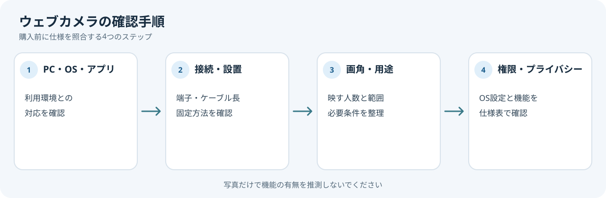

ウェブカメラは、画質の数字だけでなく、PCへの接続方法や利用する会議アプリとの互換性も確認して選びます。Windowsでカメラを使うには、端末やアプリのプライバシー設定が関係します。

1. 使うアプリとOSを確認
利用するPCのOS、会議アプリ、接続端子に製品が対応しているかメーカーの仕様で確認します。USB接続の場合はPCの空きポートとケーブル長も見ます。職場の管理PCでは、周辺機器の接続やアプリ利用が制限されていないか確認してください。
2. 画角や設置方法を用途で決める
一人で机に座って使うのか、複数人や広い範囲を映すのかを整理します。画角、固定方法、ケーブルの取り回し、モニターへの取り付け可否など、仕様表に記載された条件を比べます。解像度やフレームレートの表示は、アプリやPC側の条件と合わせて確認します。
3. Windowsのカメラ権限を確認
Microsoftの説明では、Windowsのカメラ設定で端末全体、Microsoft Storeアプリ、デスクトップアプリのアクセスを管理できます。ブラウザーや会議アプリはデスクトップアプリとして扱われる場合があります。購入後に映らないときは、接続だけでなく、カメラ権限や他アプリによる使用も確認します。
4. プライバシー機能を確認
物理シャッターやカメラ表示灯が必要なら、製品仕様に明記されているか確認します。機能の有無を商品写真から推測しないでください。
購入前の確認メモ
- 利用するPC・OS・会議アプリ
- 接続端子、ケーブル長、設置方法
- 一人で使うか、複数人を映すか
- 必要なプライバシー機能とOSのカメラ権限
画角やプライバシー機能は写真から推測せず、メーカー仕様で確認します。会議アプリや管理PCの利用制限も、購入前に照合してください。
まとめ
PC・OS・アプリとの対応、設置条件、プライバシー機能を照合します。この記事では製品の画質や音質を試験していません。
出典
- Manage app permissions for a camera in Windows — Microsoft Support（確認日: 2026-10-07）
- Camera doesn't work in Windows — Microsoft Support（確認日: 2026-10-07）